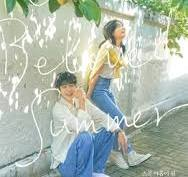

|  | berkisah tentang Choi Ung dan Kook Yeon Su yang dulunya sempat disatukan dalam sebuah dokumenter kehidupan dua siswa dengan karakter berbeda. Namun setelah bertahun-tahun keduanya kembali dipertemukan dan menggarap dokumenter yang sama membahas mengenai perjalanan mereka dengan profesi yang sekarang. Kisah cinta yang ringan namun manis membuat drakor OUR BELOVED SUMMER bakalan bikin kalian ikutan baper melihat chemistry keduanya. Bagaikan tikus dan kucing yang tak pernah akur, ternyata mereka memendam rasa mendalam satu sama lain hingga menentukan akhir perjalanan cinta antara Choi Ung dan Kook Yeon Su.(sumber: KapanLagi.com) |